Primary Source


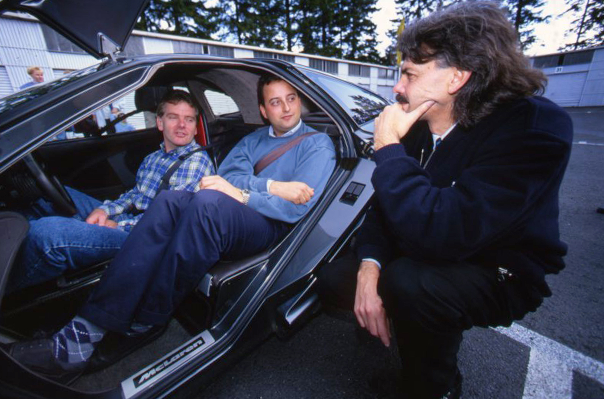
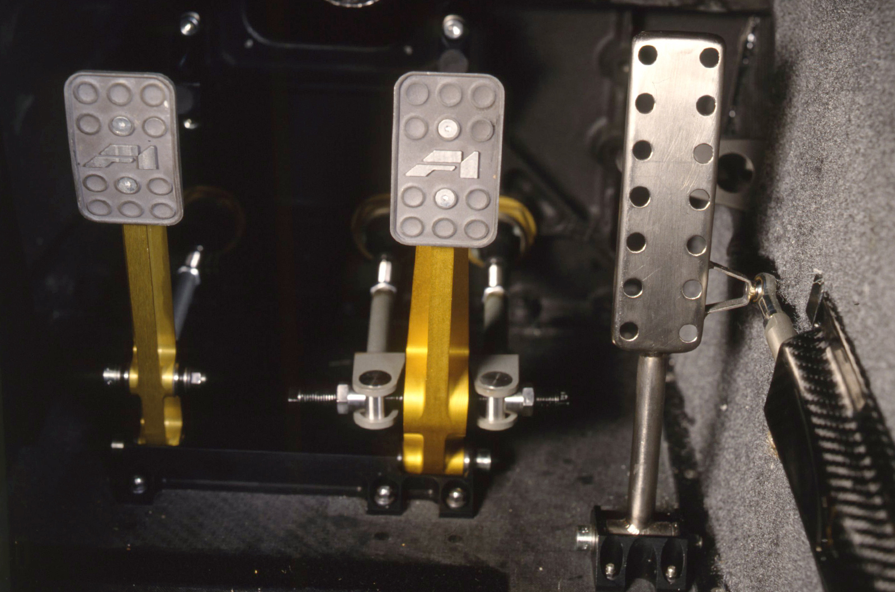
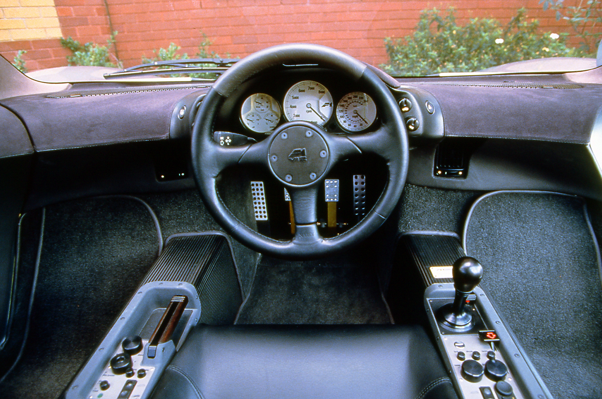
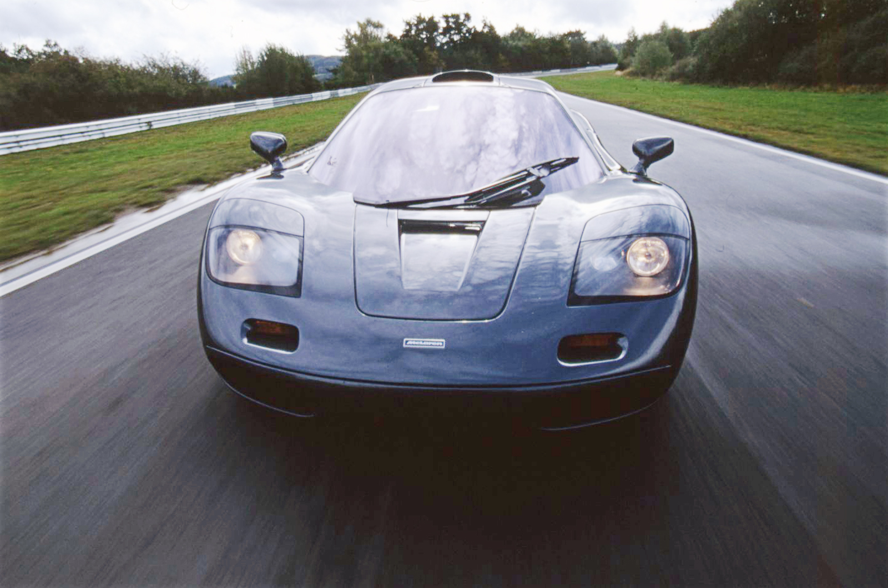
Secondary Source


Magazine and Press Coverage

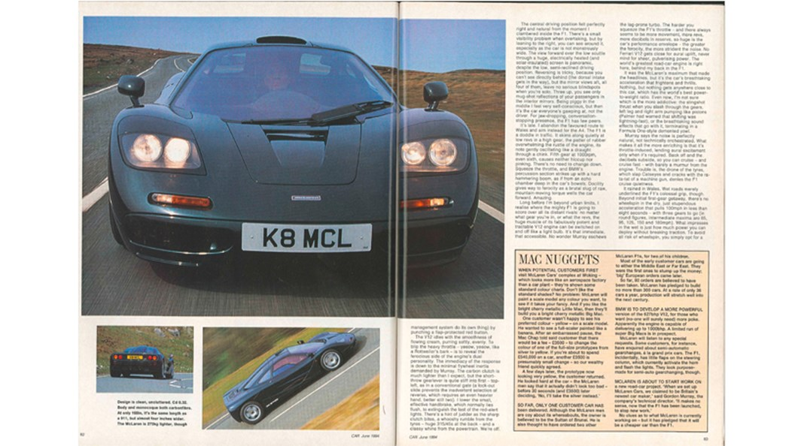
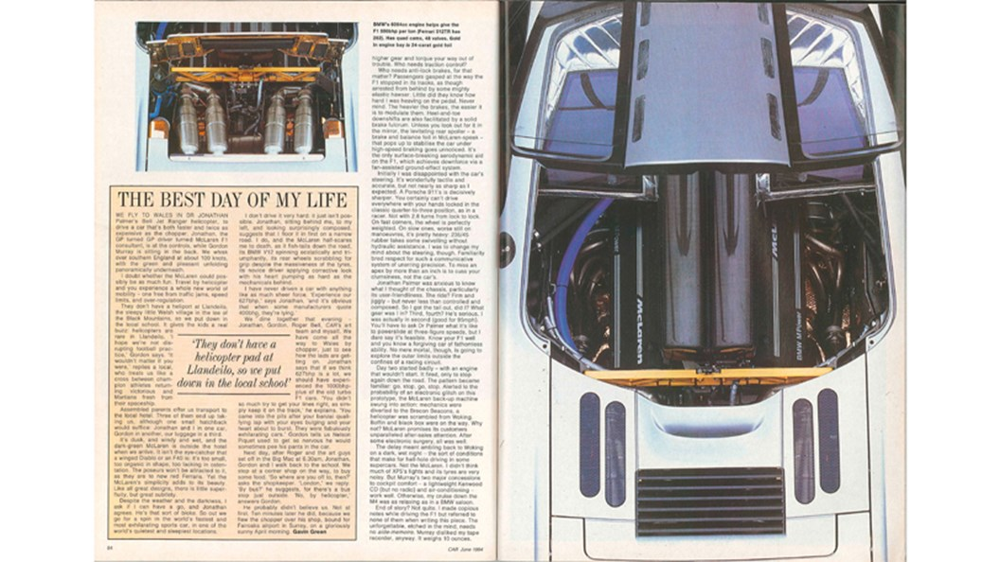


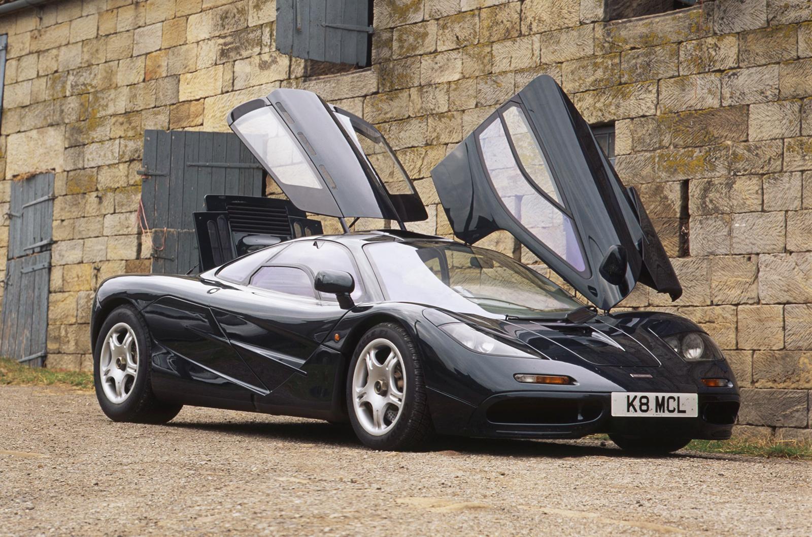

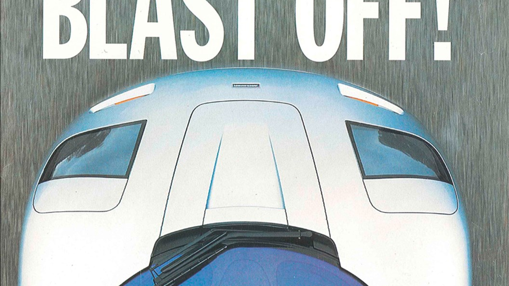


Designers, Builders, and Owners


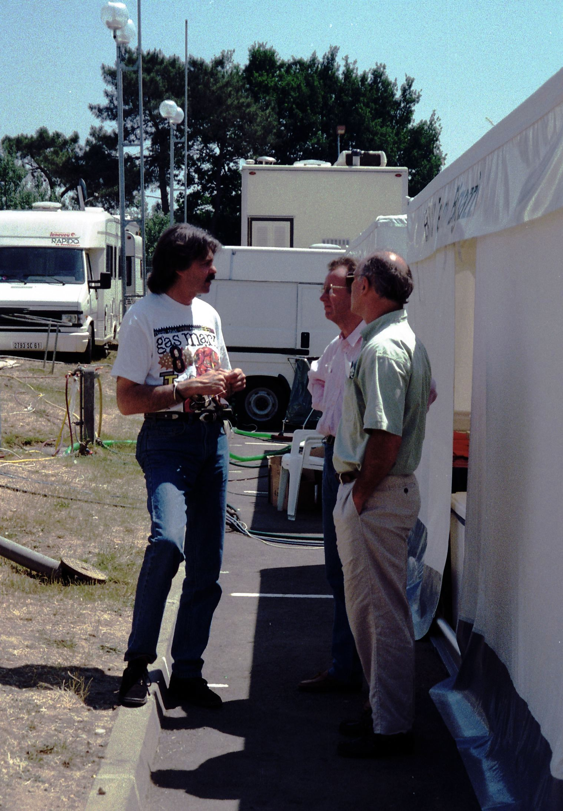


Design and Engineering


Launch and Motor Shows


Racing
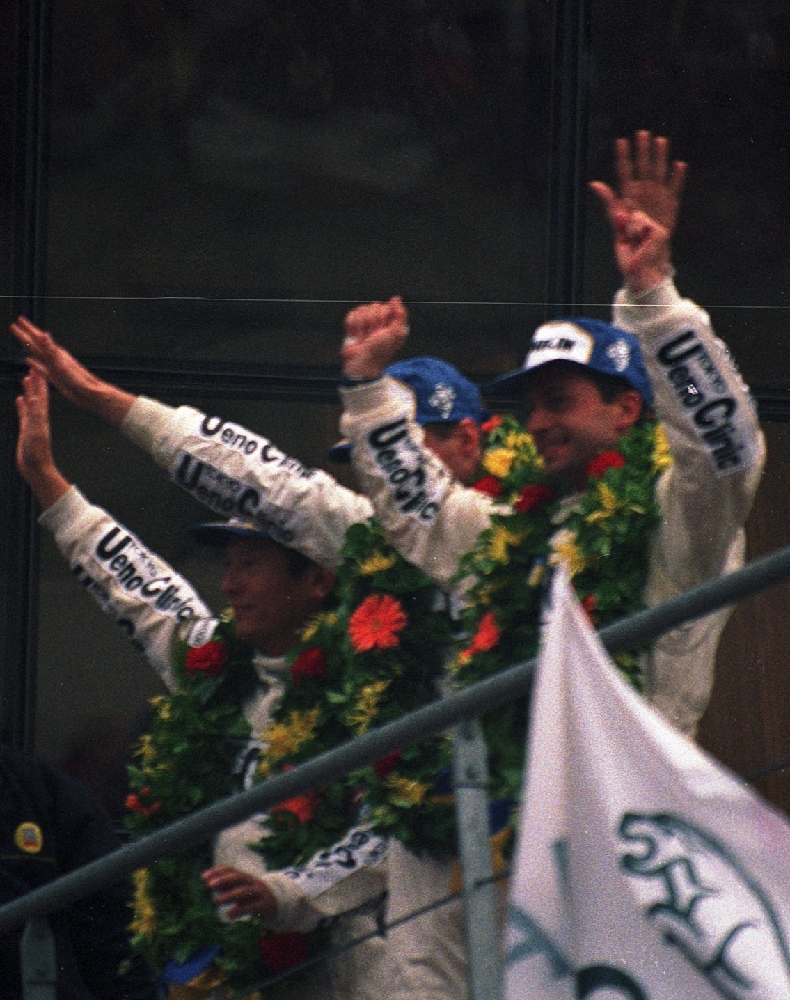
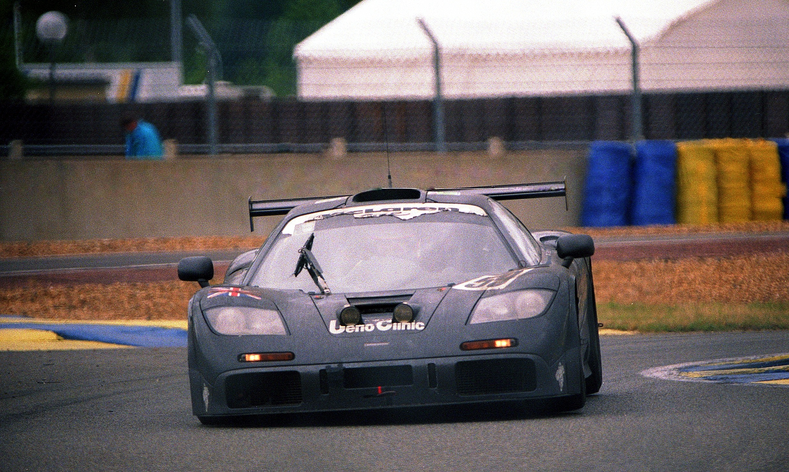
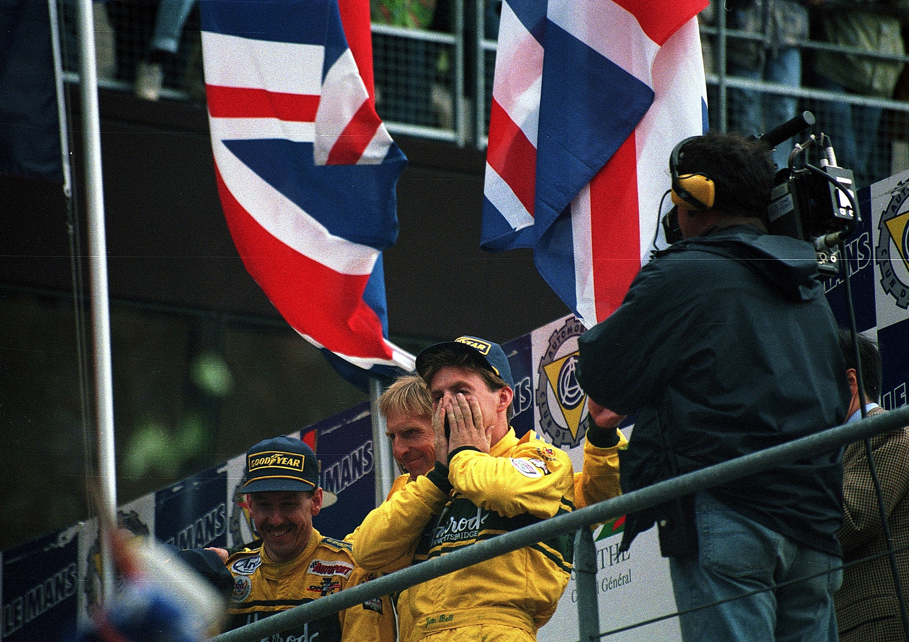
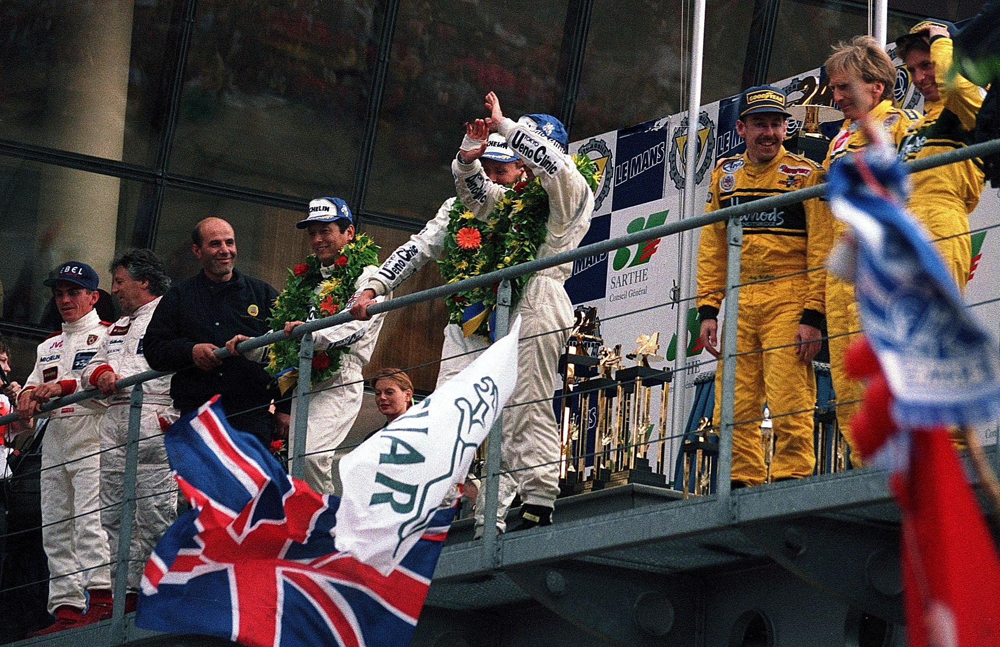

Notes
- Cropley, Steve. "McLaren F1: Full Test." Autocar, May 11, 1994.
- Cropley, Steve. "McLaren F1: Full Test of World's Greatest Supercar." Autocar, May 11, 1994. Photograph via autocar.co.uk archives. https://www.autocar.co.uk/car-review/mclaren/f1.
- Ibid.
- Ibid.
- Ibid.
- Ibid.
- Ibid.
- "McLaren F1 Review: Our Original 1994 Road Test." Car Magazine, June 1994.
- Ibid.
- Ibid.
- Ibid.
- "McLaren F1 Review: Our Original 1994 Road Test." Car Magazine, June 1994. Cover image via carmagazine.co.uk. https://www.carmagazine.co.uk/car-reviews/magazine-reviews/the-first-mclaren-f1-review-car-magazine-june-1994-supercar-test/.
- "McLaren F1 Review: Our Original 1994 Road Test." Car Magazine, June 1994. Spread scan via carmagazine.co.uk. https://www.carmagazine.co.uk/car-reviews/magazine-reviews/the-first-mclaren-f1-review-car-magazine-june-1994-supercar-test/.
- "McLaren F1 Review: Our Original 1994 Road Test." Car Magazine, June 1994. Page scan via carmagazine.co.uk. https://www.carmagazine.co.uk/car-reviews/magazine-reviews/the-first-mclaren-f1-review-car-magazine-june-1994-supercar-test/.
- Ibid.
- Ibid.
- Ibid.
- Ibid.
- Spycatcher58. 1995 Le Mans-Winning McLaren F1 GTR at Goodwood Festival of Speed. Photograph. Wikimedia Commons. CC BY-SA 4.0. https://commons.wikimedia.org/wiki/File:1995_Le_Mans_winning_McLaren_F1_GTR_display_at_Goodwood_Festival_of_Speed.jpg.
- Lee, Martin. McLaren F1 GTR, Nielsen and Bscher at Donington, 1995. Photograph. 1995. Wikimedia Commons. CC BY-SA 2.0. https://commons.wikimedia.org/wiki/File:Mclaren_F1_GTR_-_John_Nielsen_%26_Thomas_Bscher_at_Donington_1995_(49672809008).jpg.
- Autocar, McLaren F1 Road-Test Photograph, May 11 1994, via autocar.co.uk archives.
- Autocar, McLaren F1 Interior, May 11 1994.
- Car Magazine, June 1994 cover, McLaren F1 supercar test.
- Car Magazine, June 1994 McLaren F1 road-test, first spread.
- Car Magazine, June 1994 McLaren F1 road-test, second spread.
- Car Magazine, June 1994 McLaren F1 road-test, engine bay spread.
- CNN. Elon Musk Takes Delivery of McLaren F1. Broadcast footage. 1999. Stills republished by InsideEVs, January 2021. https://insideevs.com/features/465537/elon-musk-getting-delivery-mclaren-f1/.
- Ibid.
- Ibid.
- Lee, Martin. Gordon Murray in the Paddock at the 1996 Le Mans. Photograph. 1996. Wikimedia Commons. CC BY-SA 2.0. https://commons.wikimedia.org/wiki/File:Gordon_Murray_chats_in_the_paddock_behind_the_pits_at_the_1996_Le_Mans_(51816281021).jpg.
- CNN archival footage, Elon Musk Takes Delivery of His McLaren F1, 1999.
- CNN archival footage, Elon Musk Receives McLaren F1, 1999.
- Martin Lee, Gordon Murray in the Paddock at the 1996 Le Mans, 1996, Wikimedia Commons, CC BY-SA 2.0.
- Jay, Chelsea. 1995 McLaren F1 LM Engine Bay. Photograph. 2018. Wikimedia Commons. CC BY-SA 4.0. https://commons.wikimedia.org/wiki/File:1995_McLaren_F1_LM_6.1_Engine.jpg.
- Jay, Chelsea. 1996 McLaren F1 Chassis No. 63 Front End. Photograph. 2019. Wikimedia Commons. CC BY-SA 4.0. https://commons.wikimedia.org/wiki/File:1996_McLaren_F1_Chassis_No_63_6.1_Front_End.jpg.
- Chelsea Jay, 1995 McLaren F1 LM Engine Bay, 2018, Wikimedia Commons, CC BY-SA 4.0.
- Calreyn88. 1993 McLaren F1 XP4 Prototype. Photograph. 2022. Wikimedia Commons. CC BY-SA 4.0. https://commons.wikimedia.org/wiki/File:1993_McLaren_F1_XP4.jpg.
- Calreyn88. 1993 McLaren F1 XP4 Prototype, Rear Three-Quarter. Photograph. 2022. Wikimedia Commons. CC BY-SA 4.0. https://commons.wikimedia.org/wiki/File:1993_McLaren_F1_XP4_(15513).jpg.
- MrWalkr. 1994 McLaren F1. Photograph. 2026. Wikimedia Commons. CC BY-SA 4.0. https://commons.wikimedia.org/wiki/File:1994_McLaren_F1_R26.jpg.
- Martin Lee, Winning McLaren F1 GTR #59 Team on the Podium at Le Mans 1995, June 11 1995, Wikimedia Commons, CC BY-SA 2.0.
- Martin Lee, Winning McLaren F1 GTR #59 at Ford Chicane, Le Mans 1995, Wikimedia Commons, CC BY-SA 2.0.
- Martin Lee, 3rd Place McLaren F1 GTR #51 Team on Podium, Le Mans 1995, Wikimedia Commons, CC BY-SA 2.0.
- Martin Lee, 1st/2nd/3rd Place Finishers at Le Mans 1995 Podium, Wikimedia Commons, CC BY-SA 2.0.
- Spycatcher58, 1995 Le Mans Winning McLaren F1 GTR at Goodwood Festival of Speed, Wikimedia Commons, CC BY-SA 4.0.